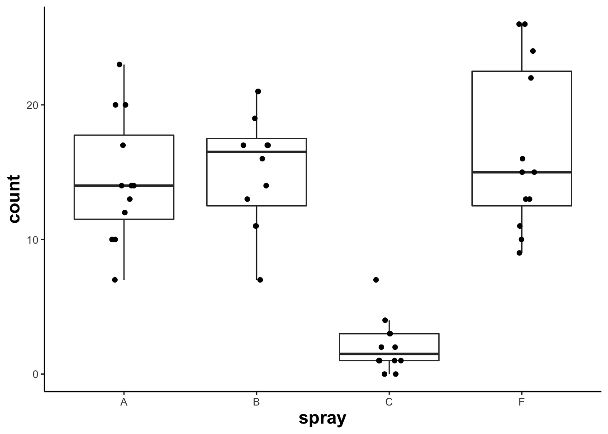
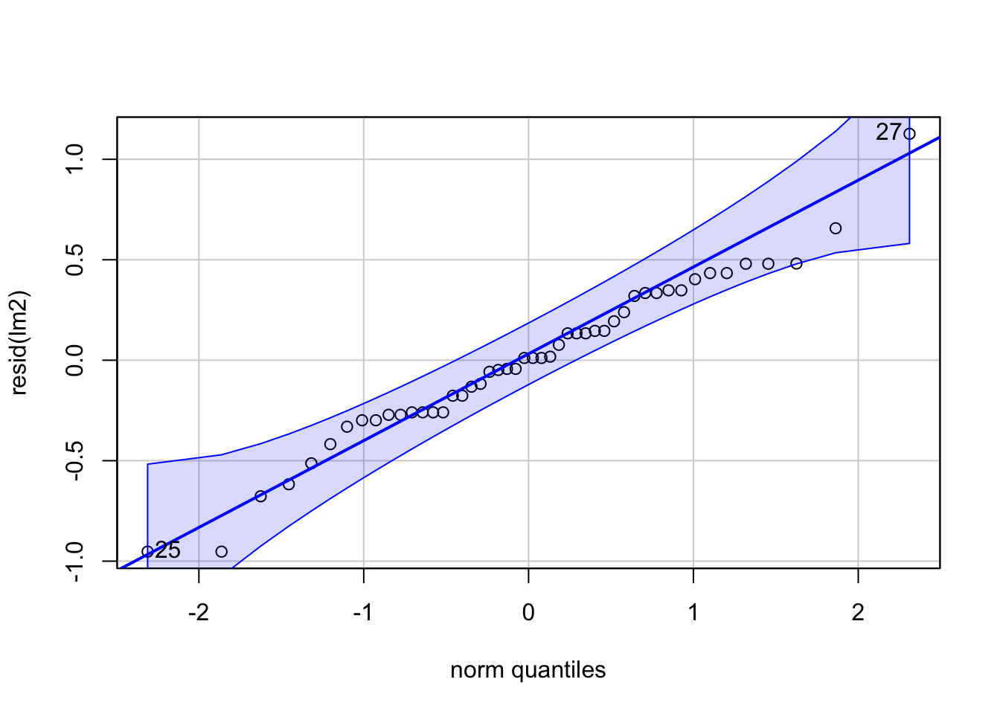
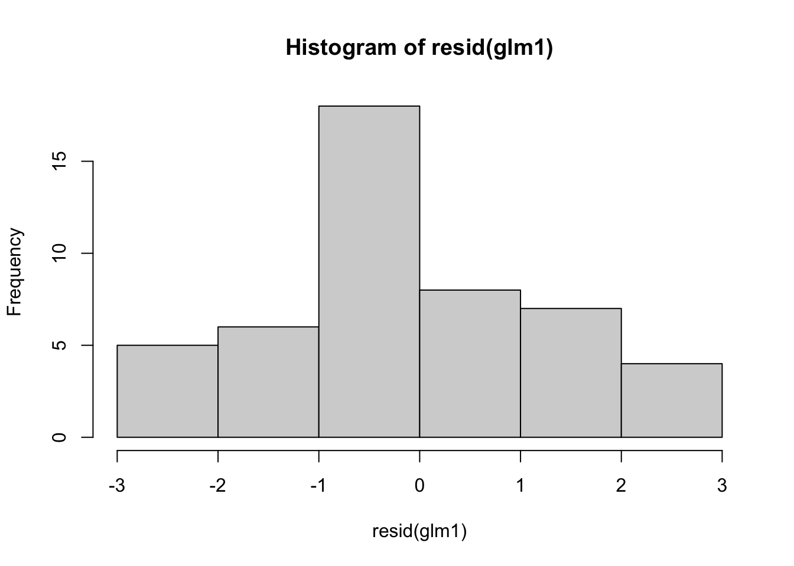
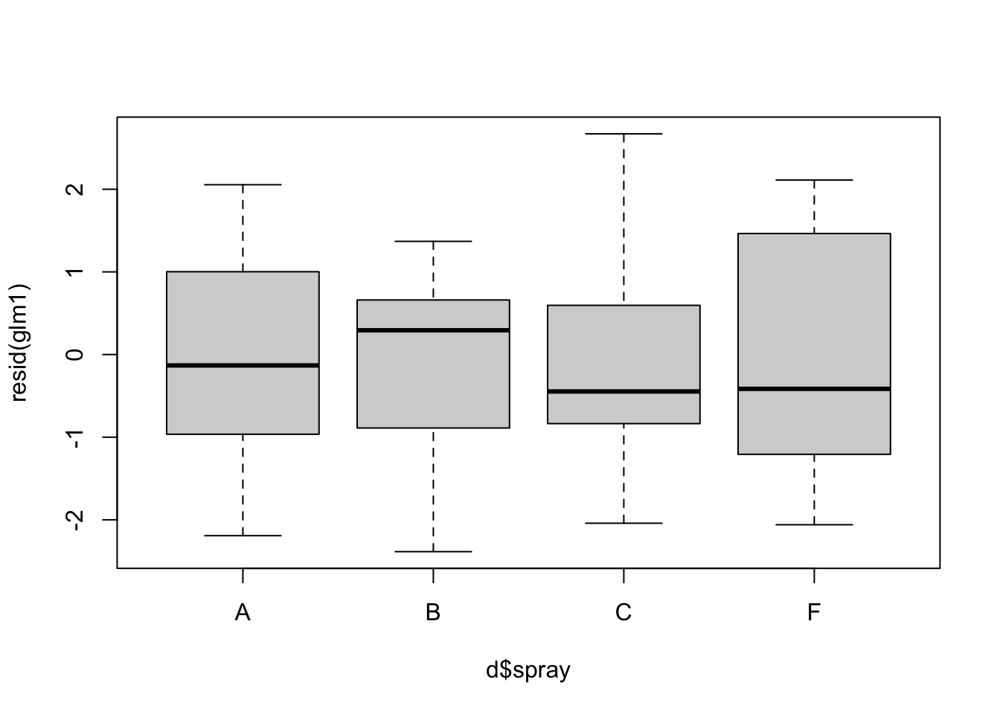
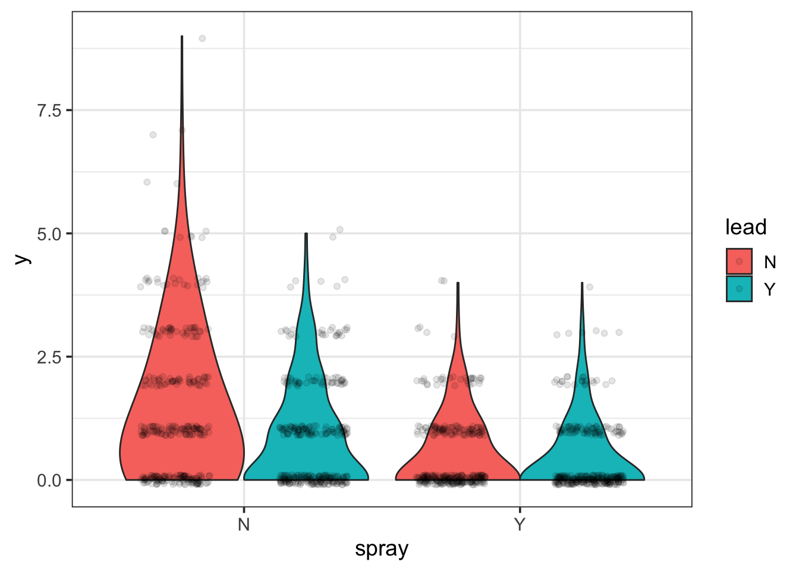
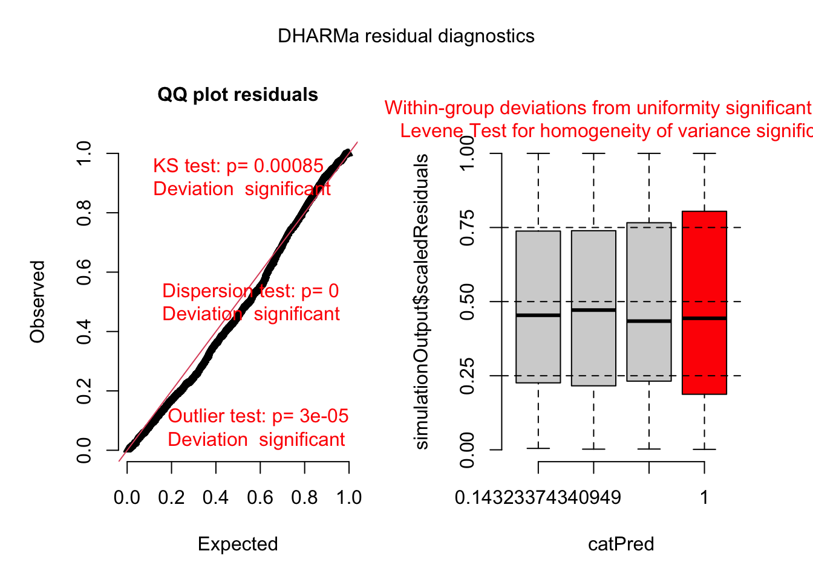
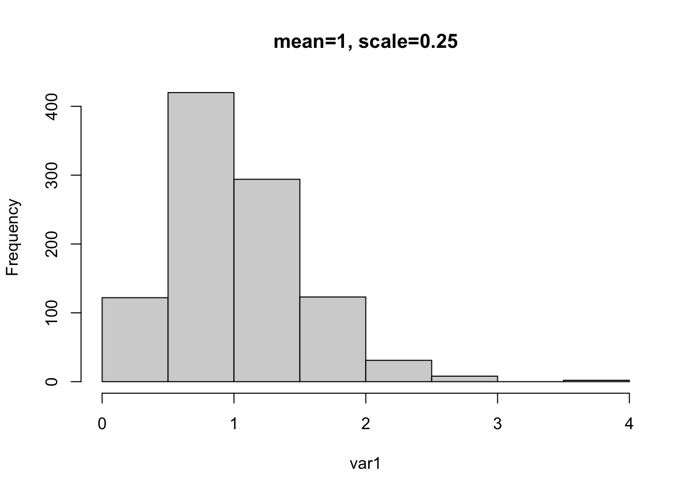

Chapter 4 Module 4
4.1 4A. Generalized Models
library(tidyverse)## ── Attaching packages ─────────────────────────────────────── tidyverse 1.3.1 ──## ✔ ggplot2 3.3.6 ✔ purrr 0.3.4
## ✔ tibble 3.1.8 ✔ dplyr 1.0.9
## ✔ tidyr 1.2.0 ✔ stringr 1.4.0
## ✔ readr 2.0.1 ✔ forcats 0.5.1## Warning: package 'ggplot2' was built under R version 4.1.2## Warning: package 'tibble' was built under R version 4.1.2## Warning: package 'tidyr' was built under R version 4.1.2## Warning: package 'dplyr' was built under R version 4.1.2## ── Conflicts ────────────────────────────────────────── tidyverse_conflicts() ──
## ✖ dplyr::filter() masks stats::filter()
## ✖ dplyr::lag() masks stats::lag()library(emmeans)
library(car)## Loading required package: carData##
## Attaching package: 'car'## The following object is masked from 'package:dplyr':
##
## recode## The following object is masked from 'package:purrr':
##
## somelibrary(agridat)## Warning: package 'agridat' was built under R version 4.1.24.1.1 Example: Conducting a one-way ANOVA with non-normal data
Let’s load up the InsectSprays data
data("InsectSprays")# available from base R Now we need to filter the data to just 4 treatments:
d <- InsectSprays %>% filter(spray=='A'|spray=='B'|spray=='C'|spray=='F') %>%
droplevels()Let’s plot out data:
ggplot(d, aes(x=spray,y=count)) +
geom_boxplot(outlier.shape = NA) +
geom_jitter(height=0,width=.1) +
theme_classic() +
theme(axis.title = element_text(face= 'bold', size = 15))
hist(d$count)
Now let’s construct a linear model to examine the effect of the different sprays on insect counts:
lm1 <- lm(count~spray, data=d)
Anova(lm1, type=2) ## car::Anova will print out an ANOVA table## Anova Table (Type II tests)
##
## Response: count
## Sum Sq Df F value Pr(>F)
## spray 1648.73 3 26.478 6.091e-10 ***
## Residuals 913.25 44
## ---
## Signif. codes: 0 '***' 0.001 '**' 0.01 '*' 0.05 '.' 0.1 ' ' 1Let’s check the residuals of the model:
hist(resid(lm1)) #' residuals should be normally distributed, even for glm
plot(resid(lm1)~fitted(lm1)) ## residuals should be evenly dispersed around 0 across the range of x's
abline(h=0) # funnel shapes or curvature is badqqPlot(resid(lm1)) ## residuals should line up pretty closely to the blue line
## [1] 45 46boxplot(resid(lm1) ~ d$spray) ## variances should be homogeneous for each group
Let’s use emmeans:
emmeans(lm1, ~spray)## spray emmean SE df lower.CL upper.CL
## A 14.50 1.32 44 11.849 17.15
## B 15.33 1.32 44 12.683 17.98
## C 2.08 1.32 44 -0.567 4.73
## F 16.67 1.32 44 14.016 19.32
##
## Confidence level used: 0.95Note all the SE are the same and CL is off.
4.1.2 Log-linear model
Now let’s use a log-linear model to examine the effect of the different sprays on insect counts.
lm2 <- lm(log(count+1)~spray, data=d)
Anova(lm2, type=2) ## car::Anova will print out an ANOVA table testing## Anova Table (Type II tests)
##
## Response: log(count + 1)
## Sum Sq Df F value Pr(>F)
## spray 29.3651 3 56.682 3.701e-15 ***
## Residuals 7.5984 44
## ---
## Signif. codes: 0 '***' 0.001 '**' 0.01 '*' 0.05 '.' 0.1 ' ' 1Let’s check residuals:
hist(resid(lm2)) ## residuals should be normally distributed, even for glm
plot(resid(lm2)~fitted(lm2)) + ## residuals should be evenly dispersed around 0 across the range of x's
abline(h=0) # funnel shapes or curvature is bad## integer(0)qqPlot and boxplot next:
qqPlot(resid(lm2)) ## residuals should line up pretty closely to the blue line
## [1] 27 25boxplot(resid(lm2) ~ d$spray) ## variances should be homogeneous for each groupLet’s use emmeans again:
emmeans(lm2, ~spray) ## note that now all means are back-transformed## spray emmean SE df lower.CL upper.CL
## A 2.697 0.12 44 2.455 2.94
## B 2.757 0.12 44 2.515 3.00
## C 0.953 0.12 44 0.711 1.19
## F 2.816 0.12 44 2.574 3.06
##
## Results are given on the log(mu + 1) (not the response) scale.
## Confidence level used: 0.95To calculate back-transformed emmeans we can add additional arguments:
emmeans(lm2, ~spray, type='response') ## note that now all means are back-transformed## spray response SE df lower.CL upper.CL
## A 13.83 1.779 44 10.65 17.9
## B 14.75 1.889 44 11.36 19.1
## C 1.59 0.311 44 1.04 2.3
## F 15.70 2.004 44 12.12 20.3
##
## Confidence level used: 0.95
## Intervals are back-transformed from the log(mu + 1) scale4.1.3 Generalized linear models
Now let’s use GLMs to examine the effect of the different sprays:
glm1 <- glm(count~spray, data=d, family='poisson') glm() is a general function that conducts a generalized linear model and we must specify the ‘family’ (aka error distribution). The default is the ‘gaussian’ distribution (normal). All the model “calculations” are saved in an object we called ‘glm1’.
Anova(glm1, type=2) ## car::Anova will print out an ANOVA table testing ## Analysis of Deviance Table (Type II tests)
##
## Response: count
## LR Chisq Df Pr(>Chisq)
## spray 185.83 3 < 2.2e-16 ***
## ---
## Signif. codes: 0 '***' 0.001 '**' 0.01 '*' 0.05 '.' 0.1 ' ' 1For the ANOVA above, the null hypothesis that all group means are equal. The argument, type = 2, provides margin tests, which is usually better than the default Type I, especially for more complicated models. For GLMs, Anova returns a likelihood ratio test with a chi-sq value
summary(glm1) ## summary() will provide the model coefficients (ie. the "guts" of the model)##
## Call:
## glm(formula = count ~ spray, family = "poisson", data = d)
##
## Deviance Residuals:
## Min 1Q Median 3Q Max
## -2.3852 -0.9345 -0.1482 0.7048 2.6709
##
## Coefficients:
## Estimate Std. Error z value Pr(>|z|)
## (Intercept) 2.67415 0.07581 35.274 <2e-16 ***
## sprayB 0.05588 0.10574 0.528 0.597
## sprayC -1.94018 0.21389 -9.071 <2e-16 ***
## sprayF 0.13926 0.10367 1.343 0.179
## ---
## Signif. codes: 0 '***' 0.001 '**' 0.01 '*' 0.05 '.' 0.1 ' ' 1
##
## (Dispersion parameter for poisson family taken to be 1)
##
## Null deviance: 262.154 on 47 degrees of freedom
## Residual deviance: 76.323 on 44 degrees of freedom
## AIC: 273.93
##
## Number of Fisher Scoring iterations: 5The coefficients allow you rebuild the means from the linear model. Rebuilding the model from the coefficients is not super helpful and the p-values aren’t very meaningful. Residual deviance should be about equal to the degrees of freedom. More than twice as high is problematic.
Now let’s check assumptions of model by examining residuals:
hist(resid(glm1)) ## residuals should be normally distributed, but don't need to be for GLMs
plot(resid(glm1)~fitted(glm1)) ## residuals should be evenly dispersed around 0 across the range of x's
abline(h=0) # funnel shapes or curvature is badqqPlot(resid(glm1)) ## calls from car package, residuals should line up pretty closely to the blue line
## [1] 27 23# points that drift from line might be outliers
boxplot(resid(glm1) ~ d$spray) ## variances should be homogeneous for each group
Diagnosing more complex GLMs can be very difficult. Residuals are often NOT NORMALLY DISTRIBUTED. We will return to this later…
emmeans(glm1, ~spray) ## emmeans::emmmeans will rebuild the model for you## spray emmean SE df asymp.LCL asymp.UCL
## A 2.674 0.0758 Inf 2.526 2.82
## B 2.730 0.0737 Inf 2.586 2.87
## C 0.734 0.2000 Inf 0.342 1.13
## F 2.813 0.0707 Inf 2.675 2.95
##
## Results are given on the log (not the response) scale.
## Confidence level used: 0.95The emmeans code above will print off the means, SE, and confidence intervals for each treatment group. Note, the coefficients are on the log-scale (look at model).
emmeans(glm1, pairwise~spray, type='response') ## adding 'pairwise' will conduct pairwise contrasts -- ie. compare each group mean to the others## $emmeans
## spray rate SE df asymp.LCL asymp.UCL
## A 14.50 1.099 Inf 12.50 16.82
## B 15.33 1.130 Inf 13.27 17.72
## C 2.08 0.417 Inf 1.41 3.08
## F 16.67 1.179 Inf 14.51 19.14
##
## Confidence level used: 0.95
## Intervals are back-transformed from the log scale
##
## $contrasts
## contrast ratio SE df null z.ratio p.value
## A / B 0.946 0.1000 Inf 1 -0.528 0.9522
## A / C 6.960 1.4886 Inf 1 9.071 <.0001
## A / F 0.870 0.0902 Inf 1 -1.343 0.5352
## B / C 7.360 1.5688 Inf 1 9.364 <.0001
## B / F 0.920 0.0940 Inf 1 -0.816 0.8468
## C / F 0.125 0.0265 Inf 1 -9.803 <.0001
##
## P value adjustment: tukey method for comparing a family of 4 estimates
## Tests are performed on the log scaleAdding the argument ‘pairwise’ will conduct pairwise contrasts – ie. compare each group mean to the others. This automatically adjusts p-values using the ‘tukey’ adjust. This can be changed using ‘adjust=XX’ within the emmeans function. The type=‘response’ will back-transform (ie. exponentiate) to the original scale
Let’s compare residuals for normal, log-transformed, and poisson models:
par(mfrow=c(1,3))
boxplot(resid(lm1) ~ d$spray)
boxplot(resid(lm2) ~ d$spray)
boxplot(resid(glm1) ~ d$spray) 
dev.off()## null device
## 1Let’s also compare means for normal, log-transformed, and poisson models:
emmeans(lm1, ~spray)## spray emmean SE df lower.CL upper.CL
## A 14.50 1.32 44 11.849 17.15
## B 15.33 1.32 44 12.683 17.98
## C 2.08 1.32 44 -0.567 4.73
## F 16.67 1.32 44 14.016 19.32
##
## Confidence level used: 0.95emmeans(lm2, ~spray, type='response')## spray response SE df lower.CL upper.CL
## A 13.83 1.779 44 10.65 17.9
## B 14.75 1.889 44 11.36 19.1
## C 1.59 0.311 44 1.04 2.3
## F 15.70 2.004 44 12.12 20.3
##
## Confidence level used: 0.95
## Intervals are back-transformed from the log(mu + 1) scaleemmeans(glm1, ~spray, type='response')## spray rate SE df asymp.LCL asymp.UCL
## A 14.50 1.099 Inf 12.50 16.82
## B 15.33 1.130 Inf 13.27 17.72
## C 2.08 0.417 Inf 1.41 3.08
## F 16.67 1.179 Inf 14.51 19.14
##
## Confidence level used: 0.95
## Intervals are back-transformed from the log scale4.2 4B. Overdispersion
In this section we will go over how to deal with overdispersion.
Let’s load the necessary libraries:
library(tidyverse)
library(emmeans)
library(car)
library(agridat)Load in and read about the beall.webworms dataset. The variables of interest are the y-count of webworms, spray-spray treatment, and lead-lead treatment. Don’t worry about the block or other variables for now.
data("beall.webworms")
d1 <- beall.webwormshead(d1)## row col y block trt spray lead
## 1 1 1 1 B1 T1 N N
## 2 2 1 0 B1 T1 N N
## 3 3 1 1 B1 T1 N N
## 4 4 1 3 B1 T1 N N
## 5 5 1 6 B1 T1 N N
## 6 6 1 0 B2 T1 N NLet’s examine and plot the data:
ggplot(d1, aes(x=spray, y=y, fill=lead)) +
geom_violin(scale="width", adjust=2) +
geom_point(position = position_jitterdodge(jitter.width=.5,
jitter.height=.1,
dodge.width = 1),
alpha=.1) +
theme_bw(base_size = 14)
Let’s now run a model with the interaction of spray and lead.
r3 <- glm(y ~ spray * lead, data=d1, family="poisson")Examine the model summary:
summary(r3)##
## Call:
## glm(formula = y ~ spray * lead, family = "poisson", data = d1)
##
## Deviance Residuals:
## Min 1Q Median 3Q Max
## -1.6733 -1.0046 -0.9081 0.6141 4.2771
##
## Coefficients:
## Estimate Std. Error z value Pr(>|z|)
## (Intercept) 0.33647 0.04688 7.177 7.12e-13 ***
## sprayY -1.02043 0.09108 -11.204 < 2e-16 ***
## leadY -0.49628 0.07621 -6.512 7.41e-11 ***
## sprayY:leadY 0.29425 0.13917 2.114 0.0345 *
## ---
## Signif. codes: 0 '***' 0.001 '**' 0.01 '*' 0.05 '.' 0.1 ' ' 1
##
## (Dispersion parameter for poisson family taken to be 1)
##
## Null deviance: 1955.9 on 1299 degrees of freedom
## Residual deviance: 1720.4 on 1296 degrees of freedom
## AIC: 3125.5
##
## Number of Fisher Scoring iterations: 6Anova(r3)## Analysis of Deviance Table (Type II tests)
##
## Response: y
## LR Chisq Df Pr(>Chisq)
## spray 188.707 1 < 2.2e-16 ***
## lead 42.294 1 7.853e-11 ***
## spray:lead 4.452 1 0.03485 *
## ---
## Signif. codes: 0 '***' 0.001 '**' 0.01 '*' 0.05 '.' 0.1 ' ' 1emmeans(r3, ~spray:lead, type='response') ## spray lead rate SE df asymp.LCL asymp.UCL
## N N 1.400 0.0656 Inf 1.277 1.535
## Y N 0.505 0.0394 Inf 0.433 0.588
## N Y 0.852 0.0512 Inf 0.758 0.959
## Y Y 0.412 0.0356 Inf 0.348 0.488
##
## Confidence level used: 0.95
## Intervals are back-transformed from the log scaleWe need to load library(performance) to test for overdispersion:
library(performance)## Warning: package 'performance' was built under R version 4.1.2check_overdispersion(r3) # overdispersion ratio calculator from RVAideMemoire## # Overdispersion test
##
## dispersion ratio = 1.355
## Pearson's Chi-Squared = 1755.717
## p-value = < 0.001## Overdispersion detected.Now let’s load the glmmTMB package to implement negative binomial distribution.
library(glmmTMB)## Warning in checkMatrixPackageVersion(): Package version inconsistency detected.
## TMB was built with Matrix version 1.3.3
## Current Matrix version is 1.3.4
## Please re-install 'TMB' from source using install.packages('TMB', type = 'source') or ask CRAN for a binary version of 'TMB' matching CRAN's 'Matrix' packager4 <- glmmTMB(y ~ spray * lead, data=d1, family="nbinom2")
Anova(r4)## Analysis of Deviance Table (Type II Wald chisquare tests)
##
## Response: y
## Chisq Df Pr(>Chisq)
## spray 125.5047 1 < 2.2e-16 ***
## lead 26.8005 1 2.256e-07 ***
## spray:lead 3.3942 1 0.06542 .
## ---
## Signif. codes: 0 '***' 0.001 '**' 0.01 '*' 0.05 '.' 0.1 ' ' 1emmeans(r4, ~spray:lead, type='response') ## spray lead response SE df lower.CL upper.CL
## N N 1.400 0.0855 1295 1.242 1.578
## Y N 0.505 0.0441 1295 0.425 0.599
## N Y 0.852 0.0611 1295 0.740 0.981
## Y Y 0.412 0.0391 1295 0.342 0.497
##
## Confidence level used: 0.95
## Intervals are back-transformed from the log scaleLet’s use the DHARMa package to simulate residuals for poisson and negative binomial models.
library(DHARMa)## This is DHARMa 0.4.3. For overview type '?DHARMa'. For recent changes, type news(package = 'DHARMa') Note: Syntax of plotResiduals has changed in 0.3.0, see ?plotResiduals for detailsWe can interpret the simulated residuals very similarly to the raw residuals we have previously examined. The residuals should line up along the line in the QQ plot and there should be (roughly) equal scatter in the residuals among the groups
plot(simulateResiduals(r3)) ## plot simulated residuals## DHARMa:testOutliers with type = binomial may have inflated Type I error rates for integer-valued distributions. To get a more exact result, it is recommended to re-run testOutliers with type = 'bootstrap'. See ?testOutliers for details
Histograms of the simulated residuals will be different than before. Here the simulated residuals should be flat. Its ok if the bars bump up and down, but they should be on average flat across the graph.The bars shouldn’t be peaked (eg. “normally” distributed) or U-shaped or increasing/decreasing.
hist(simulateResiduals(r3)) ## histogram should be flat
Now let’s look at residuals for negative binomial model:
plot(simulateResiduals(r4)) ## plot simulated residuals
hist(simulateResiduals(r4)) ## histogram should be flat4.3 4C. Binomial GLM
In this section we will run a GLM with a binomial error distribution. We load the following packages:
library(tidyverse)
library(emmeans)
library(car)
library(agridat)
library(DHARMa)We will use the Titanic survival dataset for the binomial GLM.
## LOAD TITANIC SURVIVAL DATASET
data("TitanicSurvival")
t1 <- TitanicSurvival %>% filter(age>17) # filter out children
head(t1)## survived sex age passengerClass
## Allen, Miss. Elisabeth Walton yes female 29 1st
## Allison, Mr. Hudson Joshua Crei no male 30 1st
## Allison, Mrs. Hudson J C (Bessi no female 25 1st
## Anderson, Mr. Harry yes male 48 1st
## Andrews, Miss. Kornelia Theodos yes female 63 1st
## Andrews, Mr. Thomas Jr no male 39 1stLet’s quickly plot the data:
ggplot(t1, aes(x=passengerClass, y=survived, color=sex)) +
geom_jitter(height=.2, width=0.2)
Now we can construct a GLM to estimate survival as a function of sex and passengerClass while include Age as co-variate.
tglm1 <- glm(survived ~ sex * passengerClass + age, data=t1, family = binomial(link = "logit"))Let’s look at the summary of the model:
## print off anova table
Anova(tglm1)## Analysis of Deviance Table (Type II tests)
##
## Response: survived
## LR Chisq Df Pr(>Chisq)
## sex 270.225 1 < 2.2e-16 ***
## passengerClass 85.841 2 < 2.2e-16 ***
## age 8.419 1 0.003714 **
## sex:passengerClass 48.354 2 3.163e-11 ***
## ---
## Signif. codes: 0 '***' 0.001 '**' 0.01 '*' 0.05 '.' 0.1 ' ' 1## print off summary
summary(tglm1)##
## Call:
## glm(formula = survived ~ sex * passengerClass + age, family = binomial(link = "logit"),
## data = t1)
##
## Deviance Residuals:
## Min 1Q Median 3Q Max
## -2.7672 -0.6349 -0.4503 0.4438 2.5268
##
## Coefficients:
## Estimate Std. Error z value Pr(>|z|)
## (Intercept) 4.440409 0.637328 6.967 3.23e-12 ***
## sexmale -4.105505 0.540235 -7.599 2.97e-14 ***
## passengerClass2nd -1.709631 0.609577 -2.805 0.00504 **
## passengerClass3rd -3.957654 0.562147 -7.040 1.92e-12 ***
## age -0.025352 0.008945 -2.834 0.00459 **
## sexmale:passengerClass2nd -0.203867 0.698880 -0.292 0.77051
## sexmale:passengerClass3rd 2.655924 0.597510 4.445 8.79e-06 ***
## ---
## Signif. codes: 0 '***' 0.001 '**' 0.01 '*' 0.05 '.' 0.1 ' ' 1
##
## (Dispersion parameter for binomial family taken to be 1)
##
## Null deviance: 1191.35 on 891 degrees of freedom
## Residual deviance: 752.38 on 885 degrees of freedom
## AIC: 766.38
##
## Number of Fisher Scoring iterations: 6Now we can check residuals:
hist(resid(tglm1)) ## residuals should be normally distributed, even for glm
plot(resid(tglm1)~fitted(tglm1)) + ## residuals should be evenly dispersed around 0 across the range of x's
abline(h=0) # funnel shapes or curvature is bad## integer(0)qqPlot(resid(tglm1)) ## residuals should line up pretty closely to the blue line
## Allison, Mrs. Hudson J C (Bessi Harris, Mr. George
## 3 363boxplot(resid(tglm1) ~ t1$passengerClass) ## variances should be homogeneous for each group## simulate residuals
plot(simulateResiduals(tglm1)) ## plot simulated residuals
hist(simulateResiduals(tglm1)) ## histogram should be flatTo make sense of the model output let’s use the emmeans package:
emmeans(tglm1, pairwise ~ sex:passengerClass)## $emmeans
## sex passengerClass emmean SE df asymp.LCL asymp.UCL
## female 1st 3.592 0.516 Inf 2.580 4.6034
## male 1st -0.514 0.192 Inf -0.890 -0.1371
## female 2nd 1.882 0.325 Inf 1.246 2.5183
## male 2nd -2.427 0.303 Inf -3.022 -1.8324
## female 3rd -0.366 0.203 Inf -0.764 0.0322
## male 3rd -1.815 0.170 Inf -2.149 -1.4814
##
## Results are given on the logit (not the response) scale.
## Confidence level used: 0.95
##
## $contrasts
## contrast estimate SE df z.ratio p.value
## female 1st - male 1st 4.106 0.540 Inf 7.599 <.0001
## female 1st - female 2nd 1.710 0.610 Inf 2.805 0.0567
## female 1st - male 2nd 6.019 0.602 Inf 9.997 <.0001
## female 1st - female 3rd 3.958 0.562 Inf 7.040 <.0001
## female 1st - male 3rd 5.407 0.551 Inf 9.810 <.0001
## male 1st - female 2nd -2.396 0.377 Inf -6.354 <.0001
## male 1st - male 2nd 1.913 0.364 Inf 5.262 <.0001
## male 1st - female 3rd -0.148 0.291 Inf -0.507 0.9959
## male 1st - male 3rd 1.302 0.270 Inf 4.826 <.0001
## female 2nd - male 2nd 4.309 0.444 Inf 9.700 <.0001
## female 2nd - female 3rd 2.248 0.383 Inf 5.872 <.0001
## female 2nd - male 3rd 3.698 0.367 Inf 10.088 <.0001
## male 2nd - female 3rd -2.061 0.362 Inf -5.699 <.0001
## male 2nd - male 3rd -0.612 0.344 Inf -1.776 0.4812
## female 3rd - male 3rd 1.450 0.255 Inf 5.678 <.0001
##
## Results are given on the log odds ratio (not the response) scale.
## P value adjustment: tukey method for comparing a family of 6 estimatesWe can obtain back-transformed means:
emmeans(tglm1, pairwise ~ sex:passengerClass, type="response") ## type= does contrasts before back-transforming (more appropriate!)## $emmeans
## sex passengerClass prob SE df asymp.LCL asymp.UCL
## female 1st 0.9732 0.0135 Inf 0.9296 0.990
## male 1st 0.3743 0.0450 Inf 0.2911 0.466
## female 2nd 0.8679 0.0372 Inf 0.7766 0.925
## male 2nd 0.0811 0.0226 Inf 0.0465 0.138
## female 3rd 0.4096 0.0491 Inf 0.3178 0.508
## male 3rd 0.1400 0.0205 Inf 0.1044 0.185
##
## Confidence level used: 0.95
## Intervals are back-transformed from the logit scale
##
## $contrasts
## contrast odds.ratio SE df null z.ratio p.value
## female 1st / male 1st 60.6734 32.7779 Inf 1 7.599 <.0001
## female 1st / female 2nd 5.5269 3.3691 Inf 1 2.805 0.0567
## female 1st / male 2nd 411.1685 247.5444 Inf 1 9.997 <.0001
## female 1st / female 3rd 52.3344 29.4197 Inf 1 7.040 <.0001
## female 1st / male 3rd 223.0141 122.9249 Inf 1 9.810 <.0001
## male 1st / female 2nd 0.0911 0.0343 Inf 1 -6.354 <.0001
## male 1st / male 2nd 6.7768 2.4645 Inf 1 5.262 <.0001
## male 1st / female 3rd 0.8626 0.2514 Inf 1 -0.507 0.9959
## male 1st / male 3rd 3.6756 0.9915 Inf 1 4.826 <.0001
## female 2nd / male 2nd 74.3937 33.0509 Inf 1 9.700 <.0001
## female 2nd / female 3rd 9.4690 3.6250 Inf 1 5.872 <.0001
## female 2nd / male 3rd 40.3505 14.7906 Inf 1 10.088 <.0001
## male 2nd / female 3rd 0.1273 0.0460 Inf 1 -5.699 <.0001
## male 2nd / male 3rd 0.5424 0.1868 Inf 1 -1.776 0.4812
## female 3rd / male 3rd 4.2613 1.0878 Inf 1 5.678 <.0001
##
## P value adjustment: tukey method for comparing a family of 6 estimates
## Tests are performed on the log odds ratio scaleIn order to plot we need to create new variable that is 0 or 1.
t1$surv <- if_else(t1$survived=='yes',1,0)Now we can make a plot with regression lines:
ggplot(t1, aes(x=age, y=surv, color=sex)) +
geom_jitter(height=.1, width=0) +
geom_smooth(method="glm",
method.args=list(family="binomial"),
formula = y ~ x, se=F, lwd=1.5) +
facet_wrap(~passengerClass) +
theme_bw(base_size = 20)
We can improve the aesthetics of the plot:
tm <- emmeans(tglm1, ~ sex:passengerClass, type="response") %>% as.data.frame()
cbPalette <- c("#E69F00", "#56B4E9", "#009E73", "#F0E442", "#0072B2", "#D55E00", "#CC79A7")
plot1 <- ggplot() +
geom_jitter(data=t1 %>% filter(sex=='female'),
aes(x=passengerClass, y=surv+.01),
height=0, width=.25, size=1,
alpha=.1, color="#E69F00") +
geom_jitter(data=t1 %>% filter(sex=='male'),
aes(x=passengerClass, y=surv-.01),
height=0, width=.25, size=1,
alpha=.1, color="#56B4E9") +
geom_errorbar(data=tm,
aes(x=passengerClass,
y=prob, ymin=(prob-SE),
ymax=(prob+SE), color=sex),
width=.2, lwd=1.25,
position = position_dodge(width=0.5)) +
## make bars thinner
geom_point(data=tm ,
aes(x=passengerClass, y=prob, color=sex),
size=5,
position=position_dodge(width=0.5)) +
scale_y_continuous('survival', labels = scales::percent) +
scale_color_manual(values=cbPalette) +
theme(panel.background = element_blank(),
panel.border = element_rect(color="black",
fill=NA, size=2)) +
theme(axis.ticks.length=unit(0.3, "cm"),
axis.text.x = element_text(margin=margin(5,5,5,5,"pt"),colour="black"),
axis.text.y = element_text(margin=margin(5,5,5,5,"pt"),colour="black")) + ## change axis tick marks to make them a little longer
#theme(axis.text.x = element_text(angle = 45, vjust = 1, hjust=1)) +
theme(text = element_text(size=20))
plot1plot2 <- ggplot() +
geom_jitter(data=t1 ,
aes(x=passengerClass, y=surv,
color=passengerClass),
height=.01, width=.35,
size=1, alpha=.2) +
geom_errorbar(data=tm ,
aes(x=passengerClass,
y=prob, ymin=(prob-SE),
ymax=(prob+SE),
color=passengerClass),
width=.2, lwd=1.25) + ## make bars thinner
geom_point(data=tm ,
aes(x=passengerClass,
y=prob, color=passengerClass), size=5) +
facet_wrap(~sex) +
scale_y_continuous('survival', labels = scales::percent) +
scale_color_manual(values=cbPalette) +
theme(panel.background = element_blank(),
panel.border = element_rect(color="black", fill=NA, size=2)) +
theme(axis.ticks.length=unit(0.3, "cm"),
axis.text.x = element_text(margin=margin(5,5,5,5,"pt"),colour="black"),
axis.text.y = element_text(margin=margin(5,5,5,5,"pt"),colour="black")) +
theme(text = element_text(size=20))
plot24.4 Gamma GLM
In this section we will learn about implementing the Gamma distribution in R. This distribution is helpful in for modeling a variety of data but is most frequently applied to data that is right skewed but not necessarily count data. The next several examples will illustrate how to generate Gamma distributed data based on several parameters as well as how to implement Gamma GLMs.
4.4.1 Example 1
Here we generate a distribution:
set.seed(15)
var1 <- rgamma(1000, shape = 2, scale = .5)
hist(var1, main='mean=1, scale=0.5')Note that the mean of this distribution should be 1 because the mean is equal to product of the shape parameter and scale parameter. So, 2 multiplied by 0.5 should be 1.
set.seed(15)
g1 <- glmmTMB(var1 ~ 1, family=Gamma(link="inverse"))
g1## Formula: var1 ~ 1
## AIC BIC logLik df.resid
## 1822.0994 1831.9149 -909.0497 998
##
## Number of obs: 1000
##
## Dispersion estimate for Gamma family (sigma^2): 0.483
##
## Fixed Effects:
##
## Conditional model:
## (Intercept)
## 0.9657## mean should be 1 with inverse link function
1/0.9711## [1] 1.02976In the above example we run a Gamma GLM as an intercept only model. By running an intercept only model we assume no other predictors can predict the response variable. Therefore the output from this model would simply be the mean of the response, which should be ~1 (which it is after applying the right link function to the intercept).
g1a <- glmmTMB(var1 ~ 1, family=Gamma(link="log"))
g1a## Formula: var1 ~ 1
## AIC BIC logLik df.resid
## 1822.0994 1831.9149 -909.0497 998
##
## Number of obs: 1000
##
## Dispersion estimate for Gamma family (sigma^2): 0.483
##
## Fixed Effects:
##
## Conditional model:
## (Intercept)
## 0.03491## mean should be 1 with log link function
exp(0.02937)## [1] 1.029806The same is shown above but in this case we use a log link and so to back transform the intercept we use exponentiation.
4.4.2 Example 2
In the example below we generate another Gamma distributed variable but we change the shape and scale parameter. But because the mean is based on the product of the two, the mean remains as 1.
set.seed(15)
var1 <- rgamma(1000, shape = 4, scale = .25)
hist(var1, main='mean=1, scale=0.25')
# mean = a (shape) * b (rate)
# mean = 4 * .25 = 1.0
g1 <- glmmTMB(var1 ~ 1, family=Gamma(link="inverse"))
g1## Formula: var1 ~ 1
## AIC BIC logLik df.resid
## 1281.0616 1290.8771 -638.5308 998
##
## Number of obs: 1000
##
## Dispersion estimate for Gamma family (sigma^2): 0.233
##
## Fixed Effects:
##
## Conditional model:
## (Intercept)
## 0.9711## mean should be 1 with inverse link function
1/0.9711## [1] 1.02976g1a <- glmmTMB(var1 ~ 1, family=Gamma(link="log"))
g1a## Formula: var1 ~ 1
## AIC BIC logLik df.resid
## 1281.0616 1290.8771 -638.5308 998
##
## Number of obs: 1000
##
## Dispersion estimate for Gamma family (sigma^2): 0.233
##
## Fixed Effects:
##
## Conditional model:
## (Intercept)
## 0.02937## mean should be 1 with log link function
exp(0.02937)## [1] 1.029806We once again repeat the same exercise as example 1 and see that when the appropriate back transformation based on link functions are applied to the intercept, it results in the original mean.
4.4.3 Example 3
In this example we change the mean of the distribution to 0.5 by changing the shape and scale parameters to 1 and 0.5 respectively. We then repeat the previous examples and run the inverse and log link Gamma GLMs and observe how the intercepts are backtransformed to approximate the previously set mean value.
set.seed(15)
var1 <- rgamma(1000, shape = 1, scale = .5)
hist(var1, main='mean=0.5, scale=0.5')
# mean = a (shape) * b (rate)
# mean = 1 * .5 = 0.5
g1 <- glmmTMB(var1 ~ 1, family=Gamma(link="inverse"))
g1## Formula: var1 ~ 1
## AIC BIC logLik df.resid
## 654.8480 664.6635 -325.4240 998
##
## Number of obs: 1000
##
## Dispersion estimate for Gamma family (sigma^2): 0.968
##
## Fixed Effects:
##
## Conditional model:
## (Intercept)
## 1.963## mean should be 1 with inverse link function
1/g1$sdr$par.fixed[1]## beta
## 0.5095401g1a <- glmmTMB(var1 ~ 1, family=Gamma(link="log"))
g1a$sdr$par.fixed[1]## beta
## -0.6742484## mean should be 1 with log link function
exp(g1a$sdr$par.fixed[1])## beta
## 0.50953934.4.4 Example 4
This example follows the previous examples but with the mean changed to 0.25.
set.seed(15)
var1 <- rgamma(1000, shape = .5, scale = 1)
hist(var1, main='mean=0.25, scale=1')
# mean = a (shape) * b (rate)
# mean = .5 * 1 = 0.5
g1 <- glmmTMB(var1 ~ 1, family=Gamma(link="inverse"))
g1## Formula: var1 ~ 1
## AIC BIC logLik df.resid
## 202.40398 212.21949 -99.20199 998
##
## Number of obs: 1000
##
## Dispersion estimate for Gamma family (sigma^2): 1.97
##
## Fixed Effects:
##
## Conditional model:
## (Intercept)
## 2.005## mean should be 1 with inverse link function
1/g1$sdr$par.fixed[1]## beta
## 0.4986803g1a <- glmmTMB(var1 ~ 1, family=Gamma(link="log"))
g1a## Formula: var1 ~ 1
## AIC BIC logLik df.resid
## 202.40398 212.21949 -99.20199 998
##
## Number of obs: 1000
##
## Dispersion estimate for Gamma family (sigma^2): 1.97
##
## Fixed Effects:
##
## Conditional model:
## (Intercept)
## -0.6958## mean should be 1 with log link function
exp(g1a$sdr$par.fixed[1])## beta
## 0.49868054.5 Running Gamma GLMs
In this section we simulate data for two groups:
set.seed(25)
v1 <- rgamma(100, shape = 3, scale = .5) %>% as.data.frame()
colnames(v1) <- "var"
v1$group <- "one"
head(v1)## var group
## 1 1.0881400 one
## 2 2.4520815 one
## 3 3.5583571 one
## 4 0.9405657 one
## 5 0.9225875 one
## 6 1.4339098 onev2 <- rgamma(100, shape = 1, scale = .2) %>% as.data.frame()
colnames(v2) <- "var"
v2$group <- "two"
head(v2)## var group
## 1 0.15108136 two
## 2 0.01761541 two
## 3 0.47914554 two
## 4 0.05403794 two
## 5 0.13555345 two
## 6 0.19157853 twoThen bind the two groups into one dataset:
dat1 <- rbind(v1,v2) #mean group 1 = 1.5, group 2 = 0.5
dat1 %>% mutate(obs=rep(1:100,2)) %>% group_by(obs) %>% pivot_wider(names_from = group,values_from = var) %>%
ungroup() %>% select(one,two)## # A tibble: 100 × 2
## one two
## <dbl> <dbl>
## 1 1.09 0.151
## 2 2.45 0.0176
## 3 3.56 0.479
## 4 0.941 0.0540
## 5 0.923 0.136
## 6 1.43 0.192
## 7 0.559 0.185
## 8 1.20 0.0195
## 9 1.15 0.0725
## 10 0.854 0.00261
## # … with 90 more rowsWe then check the data distributions:
hist(dat1$var)
ggplot(dat1, aes(x=var)) + geom_histogram(bins=8, fill="grey", color="black") +
facet_wrap(~group, scales="free") + theme_bw(base_size = 16)
Then we construct several different models and use AIC to compare models:
#### construct model w/ normal distribution
mod0 <- glmmTMB(var ~ group, data=dat1)
plot(simulateResiduals(mod0))
summary(mod0)## Family: gaussian ( identity )
## Formula: var ~ group
## Data: dat1
##
## AIC BIC logLik deviance df.resid
## 408.0 417.9 -201.0 402.0 197
##
##
## Dispersion estimate for gaussian family (sigma^2): 0.437
##
## Conditional model:
## Estimate Std. Error z value Pr(>|z|)
## (Intercept) 1.49247 0.06610 22.58 <2e-16 ***
## grouptwo -1.28086 0.09349 -13.70 <2e-16 ***
## ---
## Signif. codes: 0 '***' 0.001 '**' 0.01 '*' 0.05 '.' 0.1 ' ' 1emmeans(mod0, ~group, type="response")## group emmean SE df lower.CL upper.CL
## one 1.492 0.0661 197 1.3621 1.623
## two 0.212 0.0661 197 0.0813 0.342
##
## Confidence level used: 0.95#### construct model w/ log-normal distribution
mod0a <- glmmTMB(log(var) ~ group, data=dat1)
plot(simulateResiduals(mod0a))summary(mod0a)## Family: gaussian ( identity )
## Formula: log(var) ~ group
## Data: dat1
##
## AIC BIC logLik deviance df.resid
## 585.6 595.5 -289.8 579.6 197
##
##
## Dispersion estimate for gaussian family (sigma^2): 1.06
##
## Conditional model:
## Estimate Std. Error z value Pr(>|z|)
## (Intercept) 0.2288 0.1030 2.221 0.0264 *
## grouptwo -2.3798 0.1457 -16.330 <2e-16 ***
## ---
## Signif. codes: 0 '***' 0.001 '**' 0.01 '*' 0.05 '.' 0.1 ' ' 1emmeans(mod0a, ~group, type="response")## group response SE df lower.CL upper.CL
## one 1.257 0.130 197 1.026 1.540
## two 0.116 0.012 197 0.095 0.143
##
## Confidence level used: 0.95
## Intervals are back-transformed from the log scale#### construct model w/ Gamma distribution and inverse link
mod1 <- glmmTMB(var ~ group, data=dat1, family=Gamma(link = "inverse"))
plot(simulateResiduals(mod1))
summary(mod1)## Family: Gamma ( inverse )
## Formula: var ~ group
## Data: dat1
##
## AIC BIC logLik deviance df.resid
## 160.7 170.6 -77.3 154.7 197
##
##
## Dispersion estimate for Gamma family (sigma^2): 0.693
##
## Conditional model:
## Estimate Std. Error z value Pr(>|z|)
## (Intercept) 0.67003 0.05577 12.01 <2e-16 ***
## grouptwo 4.05552 0.39726 10.21 <2e-16 ***
## ---
## Signif. codes: 0 '***' 0.001 '**' 0.01 '*' 0.05 '.' 0.1 ' ' 1emmeans(mod1, ~group, type="response")## group response SE df lower.CL upper.CL
## one 1.492 0.1242 197 1.282 1.786
## two 0.212 0.0176 197 0.182 0.253
##
## Confidence level used: 0.95
## Intervals are back-transformed from the inverse scale#### construct model w/ Gamma distribution and log link
mod2 <- glmmTMB(var ~ group, data=dat1, family=Gamma(link = "log"))
plot(simulateResiduals(mod2))summary(mod2)## Family: Gamma ( log )
## Formula: var ~ group
## Data: dat1
##
## AIC BIC logLik deviance df.resid
## 160.7 170.6 -77.3 154.7 197
##
##
## Dispersion estimate for Gamma family (sigma^2): 0.693
##
## Conditional model:
## Estimate Std. Error z value Pr(>|z|)
## (Intercept) 0.40043 0.08323 4.811 1.5e-06 ***
## grouptwo -1.95342 0.11771 -16.595 < 2e-16 ***
## ---
## Signif. codes: 0 '***' 0.001 '**' 0.01 '*' 0.05 '.' 0.1 ' ' 1emmeans(mod2, ~group, type="response")## group response SE df lower.CL upper.CL
## one 1.492 0.1242 197 1.27 1.759
## two 0.212 0.0176 197 0.18 0.249
##
## Confidence level used: 0.95
## Intervals are back-transformed from the log scaleAIC:
AIC(mod0,mod0a,mod1,mod2)## df AIC
## mod0 3 408.0006
## mod0a 3 585.5705
## mod1 3 160.6724
## mod2 3 160.6724Which model is the best ranked model?